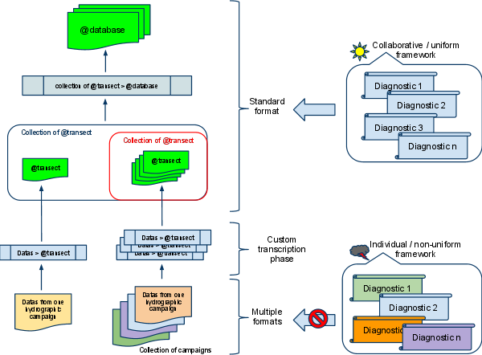

Introduction
COPODA stands for COllaborative Package for Ocean Data Analysis . It is a Matlab package based on the use of Matlab classes to manage, manipulate and work with hydrographic (such as temperature, salinity and biogeochemical tracers like oxygen, nitrate, phosphorus etc ...) datas from various origins.
Available hydrographic datas are distributed in many different formats (such as netcdf, grib, mat, hsv, etc ...) and sometimes using different conventions.
Although they are very large databases aiming at uniforming such datas (hydrobase for example), scientists often have to compare, merge and work with informations coming from different sources and therefore have to develop custom routines to perform standard diagnostics.
The primary goal of COPODA is to provide an uniform and collaborative platform for diagnostics development under Matlab . Therefore it provides an interface between different datas (and as many sources) and diagnostics users would like to perform on them so that diagnostics could be written independently of the data format such as illustrated in the following schematic.

COPODA is a set of Matlab scripts, functions and classes.
A Matlab class is an object with specific behaviors. For example '2' is a double class instance (object) and when you type 2+2 on the prompt, Matlab calls the function plus.m (a method) to perform an addition between two double objects and return the result as another double object. Matlab allows the construction/definition of new classes and the re-definition/creation of methods. As illustrated on the schematic here above, COPODA is organized around the use of two Matlab classes:
- the class Transect which is going to contain informations about one campaign (or a specific set of profiles such as coming from a single measurement platform like an Argo profiler). A Transect object contains informations about the geo-localization of the datas, the platform, the cruise and the datas. Although this mix of meta and raw informations looks similar to a netcdf file, its use is more powerful as it will be illustrated in the following sections.
- the class Database which provides the possibility to organize, manipulate and visualize a set of Transect objects.
Example:
You have datas from OVIDE campaigns 2002, 2004 and 2006 as netcdf files interpolated on a common vertical grid with 1 meter resolution. You would be able to perform similar diagnostics with these campaigns because they all have the same format. Now let's imagine the following 2 situations:
1- you'd like to compare oxygen datas from OVIDE to datas from the CARINA database which is a text file with bottle samples values on an irregular grid and not available in Hydrobase.
2- you'd like to run diagnostics you developed a few years ago when you were working on datas from another campaign but those diags were for a different data format (no netcdf or no vertical interpolation), moreover you were working with oxygen datas in ml/l and now you use mumol/kg.
3- you'd like to look at Argo profiles close to the OVIDE cruise track.
In the first situation you would have to interpolate and convert CARINA datas to match OVIDE format. In the second situation you would have to re-write your diagnostics and manage the unit conversion. In the the third situation you would have to select specific Argo profiles, manage different grid and file formats. By using COPODA these painful steps would be perform under the hood and automatically in a few seconds, allowing you to focus on diagnostics improvements and physics finally improving your productivity.